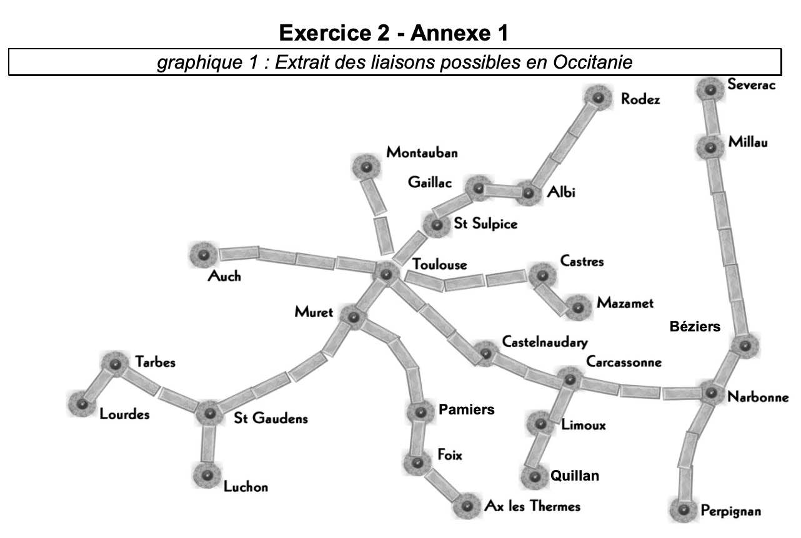
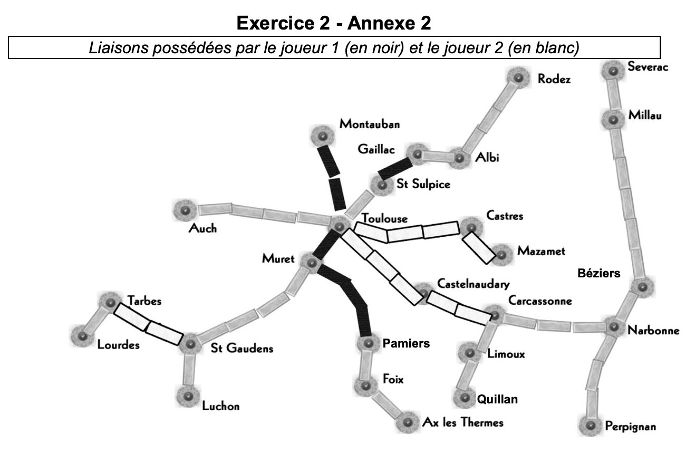

tableaux et bases en python
Bac 2021 Amerique Nord: Exercice 3
Cet exercice porte sur les tableaux et sur la programmation de base en Python.
tableau python bases
On rappelle que len est une fonction qui prend un tableau en paramètre et renvoie sa longueur. C’est-à-dire le nombre d’éléments présents dans le tableau.
Exemple : len([12, 54, 34, 57] vaut 4.
Le but de cet exercice est de programmer différentes réductions pour un site de vente de vêtements en ligne.
On rappelle que si le prix d’un article avant réduction est de x euros,
- son prix vaut 0,5x si on lui applique une réduction de 50%,
- son prix vaut 0,6x si on lui applique une réduction de 40%,
- son prix vaut 0,7x si on lui applique une réduction de 30%,
- son prix vaut 0,8x si on lui applique une réduction de 20%,
- son prix vaut 0,9x si on lui applique une réduction de 10%.
Dans le système informatique du site de vente, l’ensemble des articles qu’un client veut acheter, appelé panier, est modélisé par un tableau de flottants.
Par exemple, si un client veut acheter un pantalon à 30,50 euros, un tee-shirt à 15 euros, une paire de chaussettes à 6 euros, une jupe à 20 euros, une paire de collants à 5 euros, une robe à 35 euros et un short à 10,50 euros, le système informatique aura le tableau suivant :
tab = [30.5, 15.0, 6.0, 20.0, 5.0, 35.0, 10.5]``
Question 1
A. Écrire une fonction Python total_hors_reduction ayant pour argument le tableau des prix des articles du panier d’un client et renvoyant le total des prix de ces articles.
B. Le site de vente propose la promotion suivante comme offre de bienvenue : 20% de réduction sur le premier article de la liste, 30% de réduction sur le deuxième article de la liste (s’il y a au moins deux articles) et aucune réduction sur le reste des articles (s’il y en a).
Recopier sur la copie et compléter la fonction Python offre_bienvenue prenant en paramètre le tableau tab des prix des articles du panier d’un client et renvoyant le total à payer lorsqu’on leur applique l’offre de bienvenue.
Pour toute la suite de l’exercice, on pourra utiliser la fonction total_hors_reduction même si la question 1 n’a pas été traitée.
Question 2
Lors de la période des soldes, le site de vente propose les réductions suivantes :
- si le panier contient 5 articles ou plus, une réduction globale de 50%,
- si le panier contient 4 articles, une réduction globale de 40%,
- si le panier contient 3 articles, une réduction globale de 30%,
- si le panier contient 2 articles, une réduction globale de 20%,
- si le panier contient 1 article, une réduction globale de 10%.
Proposer une fonction Python prix_solde ayant pour argument le tableau tab des prix des articles du panier d’un client et renvoyant le total des prix de ces articles lorsqu’on leur applique la réduction des soldes.
Question 3
A. Écrire une fonction minimum qui prend en paramètre un tableau tab de nombres et renvoie la valeur minimum présente dans le tableau.
B. Pour ses bons clients, le site de vente propose une offre promotionnelle, à partir de 2 articles achetés, l’article le moins cher des articles commandés est offert.
Écrire une fonction Python offre_bon_client ayant pour paramètre le tableau des prix des articles du panier d’un client et renvoyant le total à payer lorsqu’on leur applique l’offre bon client.
Question 4
Afin de diminuer le stock de ses articles dans ses entrepôts, l’entreprise imagine faire l’offre suivante à ses clients : en suivant l’ordre des articles dans le panier du client, elle considère les 3 premiers articles et offre le moins cher, puis les 3 suivants et offre le moins cher et ainsi de suite jusqu’à ce qu’il reste au plus 2 articles qui n’ont alors droit à aucune réduction.
Exemple : Si le panier du client contient un pantalon à 30,50 euros, un tee-shirt à 15 euros, une paire de chaussettes à 6 euros, une jupe à 20 euros, une paire de collants à 5 euros, une robe à 35 euros et un short à 10,50 euros, ce panier est représenté par le tableau suivant :
tab = [30.5, 15.0, 6.0, 20.0, 5.0, 35.0, 10.5]
Pour le premier groupe (le pantalon à 30,50 euros, le tee-shirt à 15 euros, la paire de chaussettes à 6 euros), l’article le moins cher, la paire de chaussettes à 6 euros, est offert. Pour le second groupe (la jupe à 20 euros, la paire de collants à 5 euros, la robe à 35 euros), la paire de collants à 5 euros est offerte. Donc le total après promotion de déstockage est 111 euros. On constate que le prix après promotion de déstockage dépend de l’ordre dans lequel se présentent les articles dans le panier.
A. Proposer un panier contenant les mêmes articles que ceux de l’exemple mais ayant un prix après promotion de déstockage différent de 111 euros.
B. Proposer un panier contenant les mêmes articles mais ayant le prix après promotion de déstockage le plus bas possible.
C. Une fois ses articles choisis, quel algorithme le client peut-il utiliser pour modifier son panier afin de s’assurer qu’il obtiendra le prix après promotion de déstockage le plus bas possible ? On ne demande pas d’écrire cet algorithme.
Bac 2021 Metropole Sept: Exercice 2
Principaux thèmes abordés : structure de données (tableaux, dictionnaires) et langages et programmation (spécification). tableaux dictionnaire python bases
Objectif de l’exercice :
Les Aventuriers du Rail© est un jeu de société dans lequel les joueurs doivent construire des lignes de chemin de fer entre différentes villes d’un pays.
La carte des liaisons possibles dans la région Occitanie est donnée en annexe 1 de l’exercice 2. Dans l’annexe 2 de l’exercice 2, les liaisons possédées par le joueur 1 sont en noir, et celles du joueur 2 en blanc. Les liaisons en gris sont encore en jeu.
Codages des structures de données utilisées :
- Liste des liaisons d’un joueur : Toutes les liaisons directes (sans ville intermédiaire) construites par un joueur seront enregistrées dans une variable de type “tableau de tableaux”. Le joueur 1 possède les lignes directes “Toulouse-Muret”, “Toulouse-Montauban”, “Gaillac-St Sulpice” et “Muret-Pamiers” (liaisons indiquées en noir dans l’annexe 2 de l’exercice 2). Ces liaisons sont mémorisées dans la variable ci-dessous.
Remarque : Seules les liaisons directes existent, par exemple [“Toulouse”,“Muret”] ou [“Muret”,“Toulouse”]. Par contre, le tableau [“Toulouse”,“Mazamet”] n’existe pas, puisque la ligne Toulouse-Mazamet passe par Castres.
- Dictionnaire associé à un joueur : On code la liste des villes et des trajets possédée par un joueur en utilisant un dictionnaire de tableaux. Chaque clef de ce dictionnaire est une ville de départ, et chaque valeur est un tableau contenant les villes d’arrivée possibles en fonction des liaisons possédées par le joueur. Le dictionnaire de tableaux du joueur 1 est donné ci-dessous :
Question 1
Expliquer pourquoi la liste des liaisons suivante n’est pas valide :
tableauliaisons = [["Toulouse","Auch"], ["Luchon","Muret"], ["Quillan","Limoux"] ]
Question 2
Cette question concerne le joueur n°2 (Rappel : les liaisons possédées par le joueur n°2 sont représentées par un rectangle blanc dans l’annexe 2 de l’exercice 2).
A. Donner le tableau liaisonsJoueur2, des liaisons possédées par le joueur n°2.
B. Recopier et compléter le dictionnaire suivant, associé au joueur n°2 :
Question 3
À partir du tableau de tableaux contenant les liaisons d’un joueur, on souhaite construire le dictionnaire correspondant au joueur. Une première proposition a abouti à la fonction construireDict ci-dessous
A. Écrire sur votre copie un assert dans la fonction construireDict qui permet de vérifier que la listeLiaisons n’est pas vide.
B. Sur votre copie, donner le résultat de cette fonction ayant comme argument la variable liaisonsJoueur1 donnée dans l’énoncé et expliquer en quoi cette fonction ne répond que partiellement à la demande.
C. La fonction construireDict, définie ci-dessus, est donc partiellement inexacte. Compléter la fonction construireDict pour qu’elle génère bien l’ensemble du dictionnaire de tableaux correspondant à la liste de liaisons données en argument. À l’aide des numéros de lignes, on précisera où est inséré ce code.

1282 × 862

1318 × 878
Bac 2021 Metropole Sept: Exercice 5
Principaux thèmes abordés : Traitement de données en tables (CSV) et langages et programmation (spécification).
tableau python bases csv
Afin d’améliorer l’ergonomie d’un logiciel de traitement des inscriptions dans une université, un programmeur souhaite exploiter l’intelligence artificielle pour renseigner certains champs par auto-complétion. Il s’intéresse au descripteur « genre » (masculin, féminin ou indéterminé).
Pour cela il propose d’exploiter les dernières lettres du prénom pour proposer automatiquement le genre.
Pour vérifier son hypothèse, il récupère un fichier CSV associant plus de 60 000 prénoms du monde entier au genre de la personne portant ce prénom. En utilisant seulement la dernière lettre, le taux de réussite de sa démarche est de 72,9% avec la fonction définie ci-dessous :
1. Appropriation
A. Expliquer ce qu’est un fichier CSV.
B. Donner le type de l’argument prenom de la fonction genre, et le type de la réponse renvoyée.
2. Développement
Pour effectuer son étude sur les prénoms à partir du fichier CSV, le programmeur souhaite utiliser la bibliothèque csv.
A. La bibliothèque csv est un module natif du moteur python. Donner, dans ce cas, l’instruction d’importation.
B. Au cours du développement de son projet, le programmeur souhaite insérer une assertion sur l’argument donné à la fonction. Proposer une assertion sur le type de l’argument qui corrige une erreur lorsque le type ne correspond pas à celui attendu.
C. Avant le déploiement de sa solution, le programmeur décide de rendre sa fonction plus robuste. Pour cela il veut remplacer l’assertion proposée dans la question 2.B) par une gestion de l’argument pour éviter toutes erreurs empêchant la poursuite du programme. Proposer alors une ou plusieurs instructions en Python utilisant l’argument afin de s’assurer que la fonction se termine quel que soit le type de l’argument.
3. Améliorations
En prenant en compte les deux dernières lettres du prénom, il parvient à augmenter son taux de réussite à 74,4%. Pour cela, son étude du fichier CSV lui permet de créer deux listes : liste_M2 pour les terminaisons de deux lettres associées aux prénoms masculins et liste_F2 pour les prénoms féminins.
Sur votre copie, recopier et modifier la structure conditionnelle (lignes 8 à 13) de la fonction genre afin de prendre en compte les terminaisons de deux lettres des listes liste_M2 et liste_F2.
Bac 2021 Etranger1: Exercice 2
Notion abordée : structures de données (dictionnaires)
dictionnaires python bases tuple
Une ville souhaite gérer son parc de vélos en location partagée. L’ensemble de la flotte de vélos est stocké dans une table de données représentée en langage Python par un dictionnaire contenant des associations de type id_velo: dict_velo où id_velo est un nombre entier compris entre 1 et 199 qui correspond à l’identifiant unique du vélo et dict_velo est un dictionnaire dont les clés sont : "type", "etat", "station".
Les valeurs associées aux clés "type", "etat", "station"de dict_velo sont de type chaînes de caractères ou nombre entier :
"type": chaîne de caractères qui peut prendre la valeur “electrique” ou “classique”"état": nombre entier qui peut prendre la valeur 1 si le vélo est disponible, 0 si le vélo est en déplacement, -1 si le vélo est en panne"station": chaînes de caractères qui identifie la station où est garé le vélo.
Dans le cas où le vélo est en déplacement ou en panne, "station" correspond à celle où il a été dernièrement stationné.
Voici un extrait de la table de données :
flotte étant une variable globale du programme.
Toutes les questions de cet exercice se réfèrent à l’extrait de la table flotte fourni cidessus. L’annexe 1 présente un rappel sur les dictionnaires en langage Python.
Question 1
- 1.a. Que renvoie l’instruction
flotte[26]? - 1.b. Que renvoie l’instruction
flotte[80]["etat"]? - 1.c. Que renvoie l’instruction
flotte[99]["etat"]?
Question 2
Voici le script d’une fonction :
- 2.a. Quelles sont les valeurs possibles de la variable
choix? - 2.b. Expliquer ce que renvoie la fonction lorsque l’on choisit comme paramètre l’une des valeurs possibles de la variable
choix.
Question 3
- 3.a. Écrire un script en langage Python qui affiche les identifiants
(id_velo)de tous les vélos disponibles à la station"Citadelle". - 3.b. Écrire un script en langage Python qui permet d’afficher l’identifiant
(id_velo)et la station de tous les vélos électriques qui ne sont pas en panne.
Question 4
On dispose d’une table de données des positions GPS de toutes les stations, dont un extrait est donné ci-dessous. Cette table est stockée sous forme d’un dictionnaire.
Chaque élément du dictionnaire est du type:
'nom de la station' : (latitude, longitude)
On admet que l’on dispose d’une fonction distance(p1, p2) permettant de
renvoyer la distance en mètres entre deux positions données par leurs
coordonnées GPS (latitude et longitude).
Cette fonction prend en paramètre deux tuples représentant les coordonnées des deux positions GPS et renvoie un nombre entier représentant cette distance en mètres.
Par exemple, distance((49.8905, 2.2967), (49.8912, 2.3016)) renvoie 9591
Écrire une fonction qui prend en paramètre les coordonnées GPS de l’utilisateur sous forme d’un tuple et qui renvoie, pour chaque station située à moins de 800 mètres de l’utilisateur :
- le nom de la station ;
- la distance entre l’utilisateur et la station ;
- les identifiants des vélos disponibles dans cette station. Une station où aucun vélo n’est disponible ne doit pas être affichée.